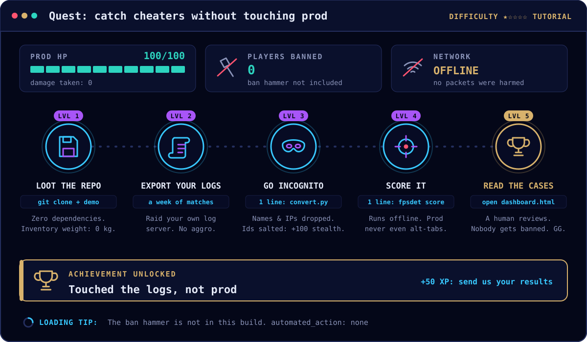

Offline.
It reads files and writes files. It is not in your match loop, your request path or your launcher. Run it on a machine that is not serving matches, and it cannot slow a server or drop a player.
zb@zerobandwidth:~/fpsdet$ Try it
Last month's matches are enough. fpsdet scores a copy of your dedicated server's logs on any machine with Python 3.11. Nothing goes on your servers or your players' PCs, nothing is sent anywhere, and nobody is banned. Production never knows it ran. This does not end cheating.

automated_action: none.Why it cannot touch production
It reads files and writes files. It is not in your match loop, your request path or your launcher. Run it on a machine that is not serving matches, and it cannot slow a server or drop a player.
No agent on your servers, no client, no driver on anyone's PC. Plain Python with no packages, on a laptop if you like.
Scoring opens no network connection unless you ask for an AI brief with --ai. The converter swaps account ids for salted pseudonyms before anything is scored.
Every case says automated_action: none. A review is a file a person opens. What you do with it is up to you, later.
Set it up
git clone https://github.com/Nimdy/fpsdet
cd fpsdet
PYTHONPATH=src python3 -m fpsdet demoThe last line should say the planted cases matched. If it does not, stop and tell us.
One row per shot and one per movement sample (ten a second is plenty), as CSV with a header row or as JSON lines, from wherever your server's logs land. Every row needs a match, an account and a time. The more fields a row carries, the more checks can run; the table below says which.
A small map says which of your columns is which fpsdet field. The converter copies only fields fpsdet knows, so names, addresses and chat never reach the output. It swaps account ids for salted pseudonyms, and it checks every value against the schema.
python3 examples/historic/convert.py export.csv --map my-map.json --game my-game --out events.ndjson108 of 108 rows written to events.ndjson.
columns not copied (fpsdet has no field for them): ip, nameThat is the bundled examples/historic/sample.csv, a made-up export with its own column names. Keep the salt file private. --who ACCOUNT_ID finds an account's pseudonym again.
PYTHONPATH=src python3 -m fpsdet score events.ndjson --profile examples/historic/profile.json --out cases/The bundled profile is every default, which is enough when your logs carry the speed cap your server applied. On the sample it opens one review: a player who held 7.0 m/s against a 5.6 m/s cap for 30 samples. The player an explosion moved just as fast is not a case.
First look only. Without --cohort, the human baseline is fitted on the same file it scores, so one cheater-heavy lobby in it raises the ceiling and hides the next cheater. For real use, freeze a baseline from an earlier window you trust with fpsdet baseline --screen-matches, then score later weeks against it with --cohort.
cases/dashboard.html is the batch in a browser; its "What the server sends" panel shows how many events carried each field. cases/review-index.json is the queue, strongest evidence first. Every case is a .json and an .html, with the reasons, the numbers, and which checks could run at all. A review is a case to open, not a verdict.
Every step, as text: examples/historic/README.md.
A field you do not have turns its check off. A wrong one frames players, so send only what your server measured. Every field is on Wire a game.
| Your logs have | fpsdet fields | Turns on |
|---|---|---|
| Match, account, time | match_id · player_id · t_ms | Required on every row |
| Ground speed, and the cap the server applied | speed_mps · on_ground · expected_max_ground_speed_mps | Speed over the cap, from the first match |
| Why a body moved, when the player did not | displacement_cause | Keeps blasts, vehicles and ladders out of speed cases |
| Shots and hits per weapon | weapon_id · hit · hitbox · distance_m | Accuracy, headshots and distance against the best humans you have measured, once a weapon has 30 players |
| Shot times, and each gun's cycle | t_ms on each shot · cycles in the profile | Fire rate and the metronome |
| The kick and the view command, on the same tick | applied_recoil_pitch_deg · compensation_pitch_deg · spray_index | No-recoil and the recoil mirror |
| What each client could see and hear | information_state · hidden_track_ms · … | The information checks. Few logs have this yet: it is what a live test adds |
Then
Counts help most: how many players, which fields you had, what went to review and watch, and above all any honest player who came out as a case. Never post account ids, pseudonyms or names.
After that
No studio runs fpsdet today. The checks that need it most have only run on planted fixtures and one Godot pilot: hidden-mover tracking, quiet aim, the wire against the picture, and planned challenges. If you run a dedicated server and can tell your players what is logged, we will help you wire the fields. The Godot reference server shows every one of them.